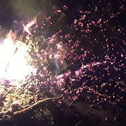
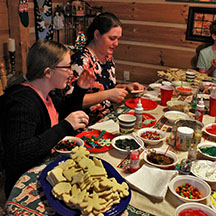

While we aren't allowed to go really anywhere due to social distancing there are places outside you can go! Here are some of the places you can go!

You can go outside in your backyard or up in the mountains and do a
fire pit. Little Cottonwood canyon has great places to do firepits.

This is a little closer to home but you can 'go' to your kitchen and
make cookies and have a fun time